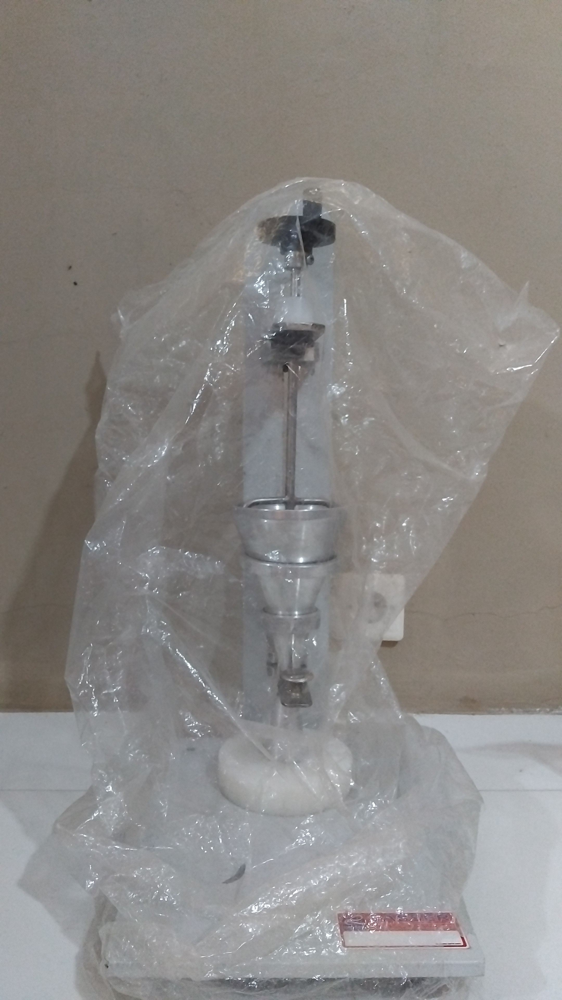
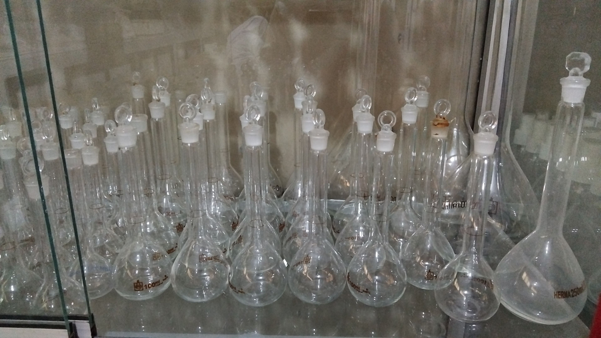
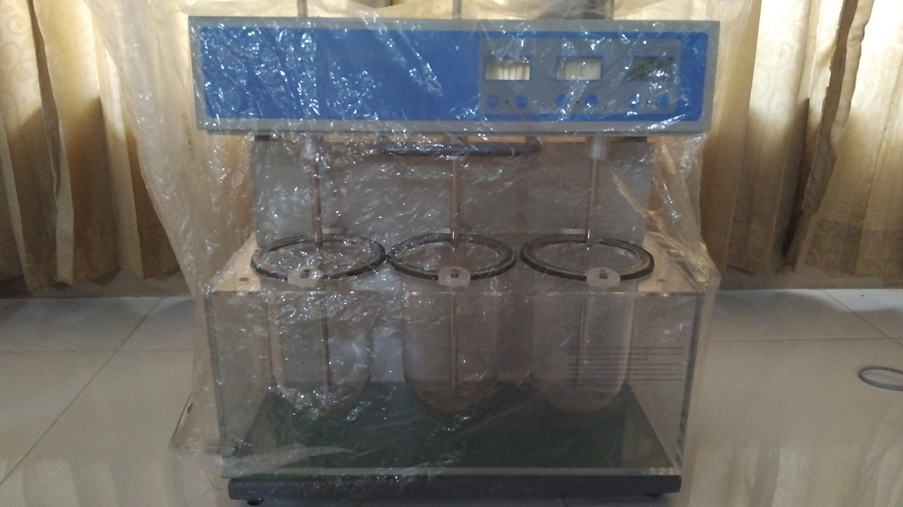

FARMASI INDUSTRI (FI)
FARMASI INDUSTRI (FI) di SMKN 1 Gantar adalah berfokus pada persiapan tenaga kerja yang memahami dan mampu mengoperasikan proses produksi sediaan farmasi seperti obat, kosmetik, suplemen kesehatan, hingga obat tradisional sesuai dengan standar industri
Profil Guru FI

Nani Yuningsih S.Farm
Kaprodi FI
Materi Pembelajaran FI
- Dasar dasar K3LH dan keselamatan
- ilmu resep dan teknik pembuatan sediaan obat
- farmakologi
- farmakognasi
- kimia farmasi
- administrasi dan manajemen apotek
Fasilitas Jurusan FI

Alat uji Disolusi

Labu takar/Labu ukur
